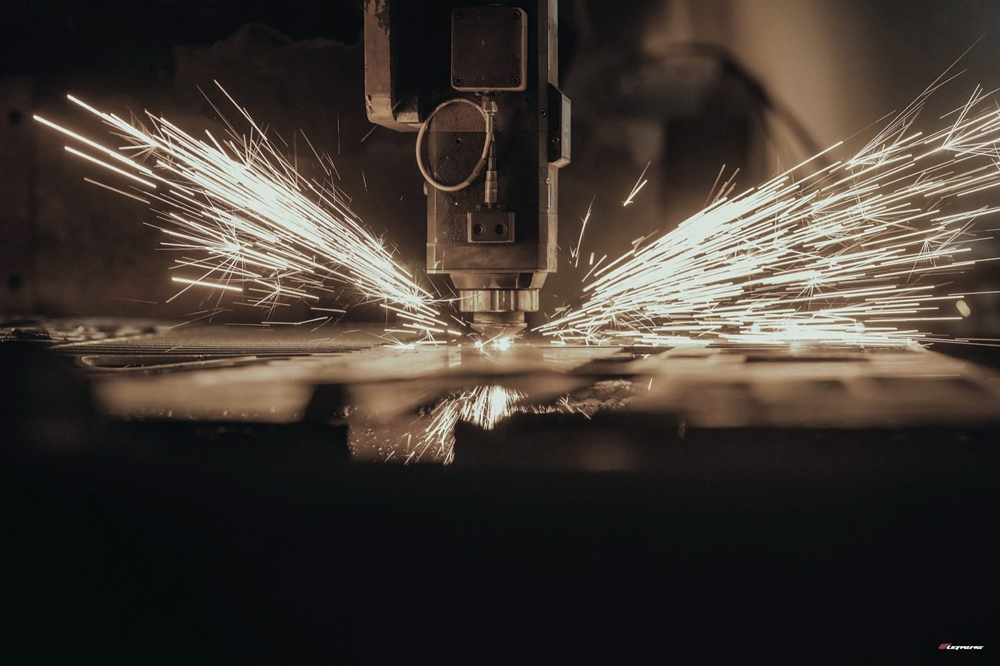
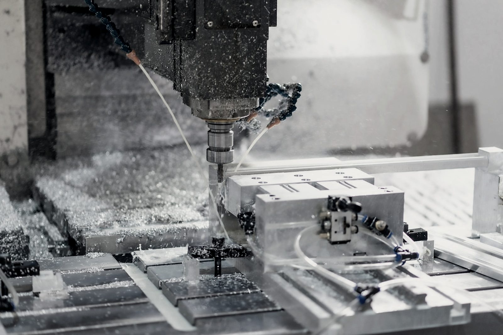

Deep drawing
絞り加工とは、
板を立体にする加工です。
溶接も接合もせず、1枚の板から継ぎ目のない形をつくる。単純に見えて、薄物とステンレスが重なると急に難しくなります。
01 仕組み
押すのではなく、
引き込む。
平らな板を、パンチ（押す型）とダイ（受ける型）ではさみ、穴の中へ引き込む。これが絞り加工です。板は伸びるのではなく、まわりから中心へ流れ込んでいきます。
流れ込むときに、板の縁は縮もうとします。縮む力を放っておくとしわになるので、しわ押さえで上から押さえる。ただし押さえすぎると板が流れず、底が破れます。この綱引きの中間点を探すのが、絞りの勘どころです。

02 難しさ
薄物ステンレスが難しい、3つの理由。
加工硬化が強い
ステンレスは変形した場所が硬くなります。同じ力で押し続けると、硬くなった場所ではなく、まだ柔らかい場所ばかりが伸びて薄くなり、そこから割れます。
焼き付きやすい
型と板がこすれて金属同士がくっつく現象（かじり）が出ます。出れば製品に傷が残り、型も痛む。潤滑と型の当たりで押さえ込みます。
薄いほど余裕が無い
板が薄いと、しわ押さえの効く範囲も、割れずに耐えられる範囲も同時に狭くなります。厚物なら1工程で済む形が、薄物では何工程にも割れます。
つまり、薄物ステンレスの絞りは「割れ」と「しわ」を同時に避ける仕事です。カワイ製作所が得意にしているのは、まさにここです。
03 工程割り
一度で出ない形は、
工程を割って少しずつ引く。
1回の絞りで縮められる直径には限りがあります。深い形は、浅く絞ってから絞り直す。これを再絞り（多工程絞り）といいます。
ブランク抜き
コイル材または板材から、絞りに要る大きさの円板を抜きます。
一次絞り
浅く、大きな径で引き込む。無理をせず、次の工程に渡せる形にします。
再絞り
径を落としながら深くしていく。形と材料によって、この工程が何度も入ります。
仕上げ・二次加工
縁を落とし、穴を開け、ねじを立て、面を取る。ここまで自社で通します。
※ 工程の数と順番は、形状・板厚・材質で変わります。上は代表的な組み方です。
04 サーボプレス

サーボプレスが
効く場面。
通常のクランクプレスは、はずみ車の回転で上下します。速さは一定で、途中で止めることもできません。
サーボプレスはモーターで動くので、下がる速度を落としたり、下死点で一瞬止めたりができます。深く絞る工程や、板を流したい工程では、この制御がそのまま歩留まりに出ます。カワイ製作所は200トンのサーボプレスを1台持っています。

CONTACT ご相談
図面が1枚あれば、話が早い。
まずは電話でも構いません。
できる・できないの見当は、その場で付きます。板厚、材質、数量、いつ要るか。この4つが分かれば、あとはこちらで組み立てます。